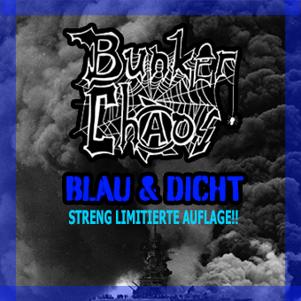

Review
BUNKER CHAOS - Blau & dicht

Gibt es hier unter den geneigten Lesern noch AltPunx, die den frühen 80er-Punksound im Kopf haben? Oder DDR-Punks, die heimlich Tapes von Ostpunkbands ergattern konnten?
Angepisste Punks, die was zu sagen hatten, musikalisch keine Virtuosen waren und sich nach ihren Möglichkeiten musikalisch auskotzen wollten. Keine Kohle für ein Tonstudio, und so wurden die musikalischen Ergüsse selbst im Proberaum live eingespielt und aufgenommen. Keine Overdubs, keine Kompressoren oder andere verschönernde Effekte, einfach nur roh uffe Zwölf.
Ja, genau … Genauso klingen BUNKER CHAOS. Und das hat seinen Charme.
Totale Verweigerung gegen Hochglanzsound, Rockstar sein und Mainstream. Und das ziehen die Regensburger konsequent durch. 2025 wurden sie wieder aktiv, nachdem sie 2018 schon unter dem Namen TRASHED YOUTH unterwegs waren und ab etwa 2019 als BUNKER CHAOS auftraten.
Ich würde ihren Stil mal unter Trash-Punk katalogisieren. Nix für Feingeister, aber ideal für den abgewrackten Straßenköter-Punk.
Und an den jungen Punkernachwuchs: So klangen die Anfangsjahre des Punk. Einfach machen, DIY or die!
Die Mucker-Sound-Polizei würde hier am liebsten die Handschellen klicken lassen.
Nur kenne ich die Intention von BUNKER CHAOS nicht: bewusste Hochglanzverweigerung oder Satire?
Ich kann es nicht recht deuten. Aber irgendwie hat es was von Totalverweigerung.